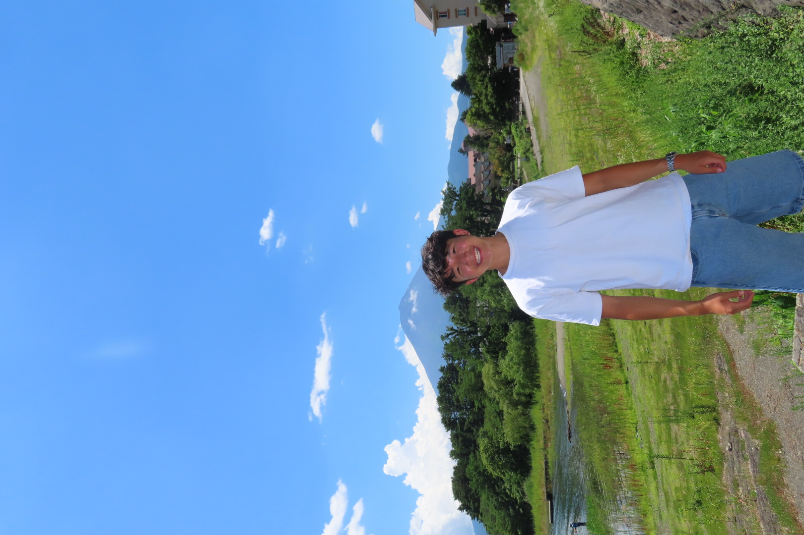

About Me
I grew up partly in Singapore and moved to Chicago around fourth grade. I am in high school now, and alongside my regular classes I take college courses in data structures and web development through the Illinois Institute of Technology. This site is one of the projects from that web development course, written by hand in plain HTML.
Two things drive most of what I do. The first is getting a little better every day, whether that means a cleaner block start or a cleaner block of code. The second is building toward a business of my own. Freelance work is how I practice both: every client project teaches me something about writing software and something about working with people.
What I Build
I work with small business owners who need more than a template. Most of my projects fall into one of these groups.
- Business websites, from the first layout to the live launch
- Admin dashboards that let owners manage payments, photo galleries, announcements, and members without touching code
- Online stores with custom checkout and order management tools
- Desktop and web applications written in C# and ASP.NET Core
- Business documents such as company profiles, proposals, and price lists
The full list of projects, tools, and experience is on my resume page.
Outside of Code
I am a captain of my school's track and field team, where I run the 100 meters, the 200 meters, and the 4x100 meter relay. I also have a cross country background and a long term goal of finishing a marathon. At school I serve as president of Mu Alpha Theta, the math honor society, and I am a member of the National Honor Society and the Student Government Association.
If you want to know why I think sprinting is the best sport there is, read my sprinting page.
Contact
The best way to reach me about a project is by email at gavin.theodore.lao@gmail.com.